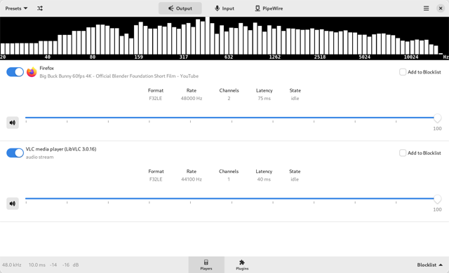
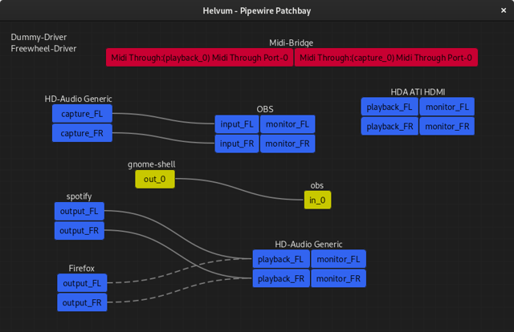

Установка PipeWire обычно подразумевает, что в системе установлены ALSA-драйвера, а PulsaAudio из системы удалено. Однако PulseAudio имела плагины, через которые можно было накладывать фильтры на звук и делать прочие настройки. Можно ли то же самое делать со звуком в PipeWire?
Похоже, что можно. Для этого следует воспользоваться следующими проектами:
EasyEffects - это продвинутый инструмент для манипулирования звуком. Он включает в себя эквалайзер, ограничитель, компрессор и инструмент реверберации, и это лишь некоторые из них. В дополнение к этому имеется также встроенный анализатор спектра. Easy Effects является преемником PulseEffects. Easy Effects поддерживает только аудиосервер PipeWire.

Помимо управления выводом звука, Easy Effects может применять эффекты к устройству ввода, такому как микрофон. Это, например, полезно при аудиозаписи, но также хорошо работает прямо во время голосовых разговоров. Так же можно подкрутить н
При запуске Easy Effects будет удобно запоминать конфигурацию, использованную в последнем сеансе. Также возможно сохранить все текущие настройки в виде профилей.
Сайт программы: https://github.com/wwmm/easyeffects
Helvum - утилита чтобы менять каналы и прохождение звукового потока между аудио-устройствами и интерфейсами через удобный графический интерфейс.

Сайт программы: https://gitlab.freedesktop.org/pipewire/helvum
В Debian 11 пакетов для данных программ нет, поэтому их придется устанавливать вручную.